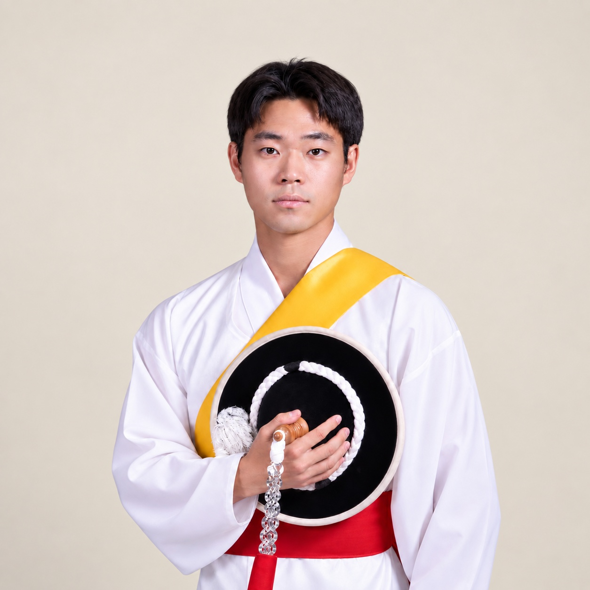

← ActivitiesCLUB & PERFORMANCE
한소리 · 연주·교육·공연 운영
풍물동아리 한소리
부원 교육과 악보 제작부터 공연 기획·연출,
무대·음향 운영까지 함께했습니다.
- 전체 활동 기간
- 2019.03 ~ 2025.11
- 회장 재임
- 2020.11 ~ 2021.11

전체 활동 기간 기준
PERFORMANCE & EDUCATION
공연 및 교육 활동
- 부원 악기 교육·지도, 악보 제작·배포
- 악기·악기채 제작 및 수리
- 공연 기획·연출, 무대 구성 및 음향 운영
2023
천안시 대학어울림 페스티벌
동아리경연 장려상
PRESIDENT · 2020.11 ~ 2021.11
회장 · 조직 재건 및 공연 운영
- 집행부 공백으로 부회장·총무·기획·홍보 등 운영 전반 수행
- 사물놀이 전문단체 연수생으로 참여하여 연주 역량 강화
- 소속 대학생 풍물패 연합 최초의 비대면 온라인 공연 및 대면 정기공연 기획·운영
활동 사진·자료
공연 · 연습 · 교육